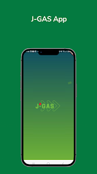
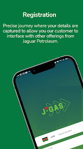

LPG operations
JGas & cylinder tracking
500+ reported JGas users · 10,000+ cylinders across four depots
I built Flutter and backend capabilities for LPG operations and designed the workflows that track cylinders from depot to customer.
Flutter · Dart · Backend APIs · ERP integration
View case study
The problem
LPG operations need to follow each cylinder through onboarding, warehouse movements, dispatch, refilling, and customer allocation.
My contribution
I architected the cylinder lifecycle workflows and delivered Flutter and backend capabilities for JGas, connecting mobile workflows with operational services and enterprise systems.
Technical challenge
Keeping a cylinder’s lifecycle coherent across depots, delivery personnel, refilling, and customer allocation required a shared model of its movements.
Outcome
The cylinder tracking platform supports 10,000+ cylinders across four depots. JGas has a reported 500+ users; the measurement period is still to be confirmed.